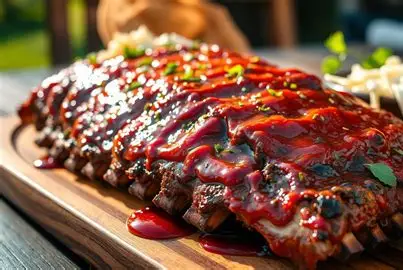

Coopy's Flavor Blasting Ribs
Coopy's Ribs
Welcome to Coopy's Ribs, where me and my crew serve the juicest ribs in the nation.

Rib Toppings
BBQ Sauce
Honey Mustard
Hot Sauce
Ranch
Rib Sides
Fries
Mini Potatoes
Salad
Rib Drinks
Wine
Vinilla Shake
Soda
Water
How To Make Ribs
To make ribs you will need the following ingredients:
pork ribs,
salt, pepper, your choice of rib sauce, and your choice of sides.
First, you will need to season the ribs with salt and pepper on both sides. Next, preheat your oven to 300 degrees Fahrenheit. Once the oven is preheated, place the ribs on a baking sheet and cover them with aluminum foil. Bake the ribs in the oven for about 2.5 to 3 hours, or until they are tender and cooked through. Once the ribs are done cooking, remove them from the oven and let them rest for a few minutes. Finally, brush your choice of rib sauce on both sides of the ribs and serve them with your choice of sides.
I choos ribs because my brother loves ribs and ate them as a little kid
Main page